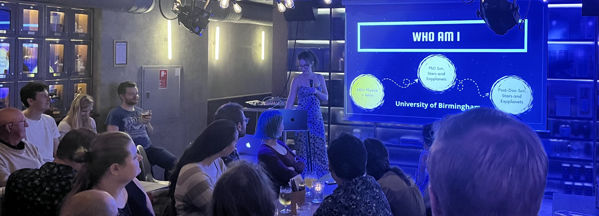

What's the use?
As scientists a large fraction of our research is paid for by the public. If we choose not to communicate with that public, we aren't honoring their hand in the discoveries we make. Aside from the monetary, I'd argue that science is meaningless if it isn't shared. I feel this is especially true for Astrophysics, as most of our work won't impact the day-to-day life of others. The point then, for myself at least, is to serve humanities curiosity - to provide answers to questions we have always asked eachother.
On a personal note, I wouldn't have attempted a career in science without following the lead of science communicators. Unlike what hollywood may tell us, most scientists aren't born with the intrinsic knowledge that they will one day persue a career in science. Most of us are just people who found an interest and made the decision to follow it. The world is brimming with people who may not consider science solely because their idea of a scientist is the hollywood trope. Science communicators have the opportunity to find those people, keeping the field alive and diverse.